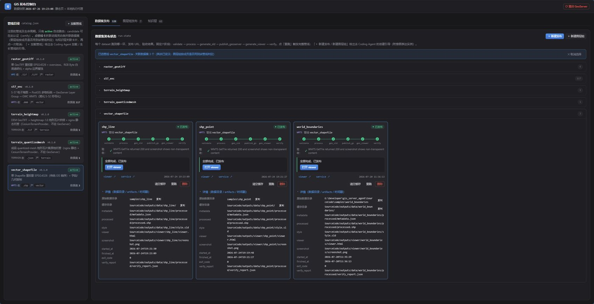
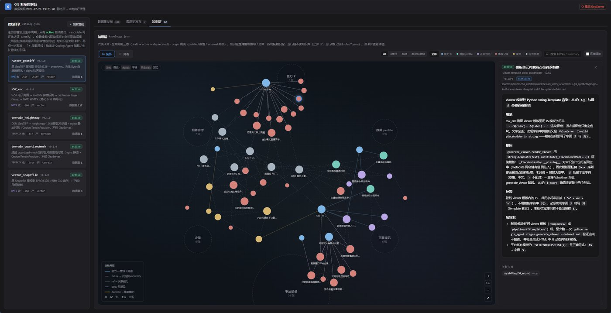

案例库/完整蓝皮书
ADPS 企业 Agent 系统蓝皮书 · 案例报告 02
成都玄宿 GIS 数据发布 Agent：运行期零 LLM 的执行型系统
推理资产化、磁盘事实平面、失败日记器官化：一个把决策全部前置到设计期的领域 Agent。
证据边界：本文由案例方一线实践者主导复盘，落位判断与取舍理由出自案例方自述。系统规模、性能数字与实现主张未经独立审计。文中的模式落位是案例方按 ADPS 定义自评的结果，个别格子的判定分歧已在正文中标出。迁移建议只在第十章列出的四条约束内成立。
一、先把三笔账算清楚：传统 GIS 发布痛在哪里
把一份地理数据变成浏览器里能打开的在线地图，这件事在每个 GIS 团队里都发生过几百次。它从来不难，每一步都是熟手的日常操作，但它也从来没被真正简化过。格式识别、坐标系、样式、瓦片缓存、图层组，每一步都摊着一串要人选、要人配的参数，而且选错一个往往不报错。
成都玄宿是一家做 GIS 软件产品与系统研发的公司，拥有自主知识产权的国产化二次开发框架。团队做这套 Agent 的起点，是把上面这件反复发生的事拆成三笔结构性的账。
第一笔，步骤跨工具，靠人串。数据在桌面 GIS、GDAL 命令行、GeoServer 管理界面、GWC 配置页之间来回搬运，顺序和参数全在当事人脑子里。同样的链路重复一百次，总有几步会错，而且事后无法复盘是哪一次、哪一步错的。
第二笔，坑在细节里，知识随人走。以 S-57 电子海图发布为例，一组海图导入 PostGIS 会按物标类建出上百张表，要逐表建 store、逐类发布图层，再手工组成图层组，叠放顺序还不能错。这里有一个典型的坑：图层组若选成 OPAQUE_CONTAINER，成员图层会从 WMS 列表消失，直接 GetMap 报 LayerNotDefined，而这个报错以 HTTP 200 的 ServiceException 形式返回，不细查就是「成功」。GeoServer 的一切配置看上去都正常，排查链路极长。这类结论不踩过不会知道，踩过了也只留在当事人的记忆里。半年后同类数据再来，人换了或者没换但忘了，整条链路重新趟一遍。
第三笔，结果不可验收。手工点出来的服务，「能用」停留在当事人当时打开看过的那一刻。没有自动化的验收证据，出问题只能等用户报。
这三笔账跟团队用不用 AI 无关。它们描述的是这个领域固有的形状：链路长、参数机械、失败静默。
二、为什么不让通用 LLM Agent 直接调 GeoServer
把 GeoServer REST API 包装成 MCP 工具、让模型现场决定调哪个接口、传什么参数，这条路团队在动手之前就否决了。理由是 GIS 发布的每一步之间存在严格的参数绑定与状态依赖。
workspace 名、store 名、layer 名、SRS 字符串、bbox 四个数，都是上一步产出、下一步必须逐位准确引用的机械真值。而 LLM 是概率模型，它不会「取用」参数，只会「尝试生成」参数。生成错一位，轻则服务发布失败，重则发布成功但渲染全错，而且不可预料、不可复现。
这个判断与案例报告 01 中东方屹腾的结论同源。两个团队在完全不同的行业里，因为同一个原因走到了同一个岔口：两边要的不是内容生成，是执行。执行传递的是机械参数，而机械参数不能交给概率模型生成。ADPS 把这条分野写进了执行型与内容型的概念定义。
判断一个场景落在哪一侧，看四件事。
| 维度 | 内容生成型 | 执行型 |
|---|---|---|
| 步骤关系 | 松散，顺序可调 | 严格依赖，跨一步全盘错 |
| 步骤间传递 | 文本内容，语义偏差不致命 | 机械参数（id、名称、坐标），错一位即事故 |
| 错误代价 | 内容质量下降，一般无副作用 | 交付失败或破坏业务数据 |
| 对模型的要求 | 生成质量 | 确定性，而确定性不能只靠概率 |
GIS 数据发布逐条落在右列：六个阶段有硬依赖，阶段间传递的是 layer_name、processed_crs、processed_bbox 这类机械真值，发错的服务被前端真实消费，GetTile 全部返回 400 就是生产事故。
三、推理资产化：把决策从运行期挪到设计期
执行型场景都要面对同一个矛盾：系统要确定，模型给概率。常见的工程解法是保留运行期的模型，再用控制结构约束它。这套系统把同一逻辑推到了更彻底的位置——运行期整条链路没有任何模型调用。
路由决策是二十行查表代码，重试回退是两张 YAML 规则表，编排是静态的六阶段链。模型只出现在管线的生长期：新数据格式来了，Coding Agent 帮人设计新管线，人审阅、显式首跑、认证转正之后，运行期永远不再碰模型。
能做到这一点，原因不在实现技巧，在这个场景的意图空间形状。对话式场景的意图只能从自然语言里识别，模型必须留在运行期。而 GIS 发布的意图载体不是自然语言，是数据本身：目录里是 .000 文件，意图就是发布 S-57 海图，是 .tif，意图就是发布栅格。输入签名即意图，意图识别因此从「模型推断」退化为「确定性判定」，兜底也变成显式报错。
案例方把这件事命名为推理资产化：这个系统不是没有推理，而是把推理前置了。每个「该走哪条管线、怎么发布」的判断，都在管线设计期由模型加人做一次，结论固化进管线声明，运行期查表执行。从「每次调用付费给模型」变成「一次付费、固化成 YAML、永久复用」。
判断标准只有一条：这个决策是高频且有标准答案，还是低频且开放。
| 决策 | 特征 | 归宿 |
|---|---|---|
| 复用哪条管线 | 高频、有标准答案 | 规则下沉：管线声明 accepts，运行期查表 |
| 失败后怎么办 | 高频、错误签名可枚举 | 规则下沉：error_map 加 retry_policy，按签名路由 |
| 发布成什么 | 管线设计期一次性决定 | 写死在 produces / publish 字段 |
| 生长还是复用 | 低频、一次性、需要领域知识 | 模型加人，发生在生长期 |
用双轴框架的语言讲，这是把推理行的格子大面积重定位到设计期，把省下来的不确定性预算花在治理行和记忆行上。代价是明确的：系统只承诺处理已认证管线覆盖的输入签名，签名之外一律明确拒绝，绝不现场发挥。
案例方自述的边界：「运行期零 LLM」不等于系统不需要智能。管线的设计、错误规则的沉淀、新格式的识别，这些真正需要判断的地方仍然由模型加人完成，只是被挪出了运行期。用「系统内含多少推理能力」衡量，本系统得分很低。用「每次运行的确定性与成本」衡量，这是设计目标本身。
四、Agent 性不在有没有模型，在闭不闭环
运行期没有模型，路由是查表，编排是静态链，那它和一个自动化脚本有什么区别。这个问题必须正面回答，否则前三章的立场就是在为「写了个脚本」找说法。
区别不在内部用了什么技术，在结构属性。脚本是 fire-and-forget 的线性执行，命令发出去就算完。Agent 是感知、决策、行动、验证的闭环，带状态、会生长。逐条对齐这套系统：
- 感知：意图从数据里读出来，不靠人传。validate 阶段按活跃管线的 accepts 声明遍历输入目录，自行识别格式签名。
- 决策：查表是决策的实现方式，不是决策的消失。新管线注册后路由自动覆盖新签名，平台代码不动。
- 行动：对真实系统产生可观察的副作用。publish 阶段操作 GeoServer REST、写 PostGIS、落托管目录，世界的状态因它改变，且改变可被第三方独立观察。
- 验证：发出去不算完。verify 阶段自发 GetMap/GetTile 嗅探加截图，判定以「HTTP 200 且 content-type 为 image/*」为准。这条判据是踩出来的：ServiceException 也返回 200，只看状态码会把失败误判成成功。
- 回退：遇错按知识路由，不是直接崩。失败按错误签名匹配回退步骤，签名之外的未知错误显式上抛，绝不静默吞掉。
- 记忆与生长：状态落盘成磁盘事实，失败沉淀成知识卡，管线走 draft、candidate、active 生命周期。能力集合随使用扩展。
和 CI/CD 流水线的区别也在同一张清单里：流水线由人显式触发、配置显式给定、跑完即止，既不感知输入、不路由决策，也不验收领域语义，更不会把失败沉淀成下次的知识。
六条合起来，这个系统的自主性是有界的：意图空间封闭，签名之外一律明确拒绝。有界自主不是能力残缺，正是执行型 Agent 的题中之义。它承诺的不是什么都能聊，是接下的活一定干成、干错能查、下次更稳。
五、磁盘事实平面：进程之间不传对象，传文件
系统主干是六个阶段组成的固定流水线：validate 识别格式与路由管线，process 重投影并归一坐标系，generate_sld 生成模板样式，publish 过契约门禁后落 GeoServer，viewer 生成浏览页，verify 截图与请求验收。
每个阶段是独立子进程。编排器把阶段跑成 subprocess，对它是黑盒：运行内能拿到的信息只有返回码和输出文本，成败判定靠错误签名匹配，不靠结构化返回值。这个黑盒约束反过来决定了状态必须走另一条信道——磁盘。
阶段之间要传的状态全部写进一份 metadata.json。写入纪律是一个事实一个写入者：validate 写识别结果，process 追加处理结果，下游阶段只读不重算。「bbox 只在 process 算一次」这条硬约束的本质，是让真相在磁盘上只有一个版本。任何阶段本地重算，都可能与落盘值漂移出两个「事实」。
磁盘事实平面分三层，职责正交，只做指针不复制：metadata.json 是管线契约层，run-state.json 是编排层，verify_report.json 是验收层。控制台的全部数据源就是这几份 JSON 加三份索引投影，静态托管，没有 API 层。

这个选择换来四个性质。可审计：阶段边界即文件边界，任何一次运行事后可完整复盘，不依赖任何进程的内存还活着。可恢复：重跑时回读落盘的输入路径，批量中断后续跑，已成功的数据集靠落盘状态自动跳过，恢复不需要专门的状态机，文件就是状态机。可热更新：执行代理收到写操作后新起子进程，跑的是磁盘上最新的代码，改编排、阶段、SDK 下一次运行即生效。跨语言可消费：前端控制台、执行代理、命令行三方不共享任何代码，只共享文件契约。
代价同样明确：文件契约即系统契约，而没有任何框架替你管这件事。系统里真实的耦合点全部以防复发注释的形式记着，三条典型：前端判定「这次轮询拉到的状态是不是我触发的那次运行」，靠的是时间戳加五秒容差，命令行端若改时间精度，前端的在途结算必须同步改。validate 无匹配管线时的报错必须以固定前缀开头，规则表的第一条靠这个前缀命中，任何一端改文案，链路就静默断掉。状态文件各带 schema 版本号，字段集变更即 bump，这是文件契约唯一的显式版本管理机制。
案例方自述的脆弱点：这套文件契约的维护方式是纪律而非框架。schema 版本、防复发注释、单元测试，三样都靠人守。清晰、可审计，但没有任何编译器替你检查两端是否还同步。
六、把失败日记做成器官：三层循环嵌套
ADPS 把 M4 失败日记列为核心模式之一，坐标是记忆行乘循环列。这套系统把它从一个模式做成了一个器官：一套持续生长的知识卡片、两张规则表、一条带质量门的管线生命周期，嵌套成三层循环。
内层是运行期的秒级循环，零模型。阶段失败后匹配错误签名，动作只有三值：retry、abort、skip。真实条目比如「源矢量缺少空间参考，无法判定坐标系」判 abort，「WMTS 瓦片图层启用失败，可能缓存服务未就绪」判 retry。这里有一条设计细节值得点名：action 为 abort 的条目都是不许自愈的失败。缺空间参考、海图更新链断号，这些错了就该停，重试只会把废图发出去。自愈的前提是可自愈，认不出来的、不该自愈的，必须显式停。
外层是沉淀期的周级循环，人在环。每次真实踩坑写成一张失败卡，固定五段结构。以「WMTS 瓦片请求除零报错」这张卡为例：signature 段写怎么认出它，这里是 GetTile 返回 400、响应含「/ by zero」。root_cause 段写为什么发生，并交代证据边界：瓦片图层的 metatile 尺寸被配成 0×0，而官方文档对取 0 的合法性与后果无任何记载，这条是纯平台实测发现的。fallback 段写当下怎么办。fixed_by 段把结论固化进 SDK 默认参数，让防复发落在发布机制层，而不是落在人的记忆里。related_rules 段回链到运行期查的规则表。

这个项目有一条写进协作约定的纪律：凡涉及领域知识或平台机制的修复，必须同步沉淀失败卡或规则条目，否则不算完成。判断标准是「下次别人或 Agent 遇到同样现象，能否靠卡片定位」。
知识层不只有失败卡。卡片分六类，各回答一个不同的问题：capabilities 记一条管线能做什么，profiles 记数据画像与处理基线，patterns 记跨管线的强制纪律，failures 记真实失败的五段解剖，decisions 记平台级取舍与理由，refs 记组件行为基线。接入的要求不止是把文档堆进目录，还要遵守两条机器可消费的关联规则：能力卡与管线同名，其余卡的 source 字段必须含管线路径。卡片写得对不对，直接决定控制台里管线有没有知识视图。
七、管线生命周期：能力凭什么被信任
中层是生长期的天级循环，模型只出现在脚手架环节。ADPS 把管线这类构件落位在 F2 技能包。官方模式描述的是静态结构，可复用的技能以结构化形式存取。这套系统补上的是技能包怎么来，以及它凭什么被信任。
一条管线从脚手架到自动接活，要过两道质量门。门一管证据：首跑由人的意图显式触发，跑完整六阶段，publish 前过契约门禁查最小事实集，结构不对不许碰 GeoServer。verify 阶段发真实请求、截图加图像分析，结果不对不算过。首跑成功后自动翻 candidate。门二管判断：candidate 升 active 必须人点认证。每升一档拿证据挣，但证据够不够，人拍板。
最值得单独说的是版本漂移监控：活跃管线的当前版本与被认证过的版本不一致时，系统自动把它退回候选态。意思是「你改过的代码不再是被认证过的那一份」。认证不是一次性事件，是持续状态。
人在环的位置精确到两个动作：新管线第一次运行必须人显式指定，候选升活跃必须人点认证。其余全部自动。于是生长的权责划分很清楚：模型负责把领域知识组织成管线草案（快），人负责判断它该不该接活（准），系统负责保证未认证的能力永远不自动接活（稳）。
三层循环合起来，是这个系统「可生长」三个字的具体所指：内层兜运行期可自愈的失败，中层管能力怎么长出来，外层把失败变成资产，而外层沉淀的规则正是内层查的表。
八、42 格落位：14 个实格、4 个薄格、1 格落在官方空白
案例方把系统放到双轴矩阵上逐格交代。这里的读法有三点需要先说明。
着色口径：实格指有直接代码实体，薄格指概念沾边但不是该坐标官方模式的典型形态，其余为不做或不需要。落位不等于采用官方模式：感知乘链式、推理乘路由、反思乘链式三格，案例方的实现与该格官方模式机制不同，已在格内注明。若按更严格的定义，比如 F1 必须是模型自评，相应格子应改判为空。案例方选择这样标注，是为了让分歧停在定义层面而不是事实层面，这个态度本身值得记一笔。按行看资源投向，按列看拓扑偏好。
| 认知功能 | 链式 | 路由 | 并行 | 循环 | 层级 | 编排 |
|---|---|---|---|---|---|---|
| 感知 | 薄格：validate 输入签名到磁盘事实 官方 P2 语义压缩，机制不同 | — | — P4 不做 | — | — | — |
| 记忆 | — M2 记忆不给模型读 | — | — | 实格：失败日记 M4，见第六章 | 实格：三层记忆各有实体 M1，载体是规则与事实 | 实格：运行状态外部化 M3，消费者是人与控制台 |
| 推理 | — R1 运行期无模型 | 薄格：路由与回退纯查表 官方 R2，规则表替代模型路由 | — R3 不做 | — | — | — |
| 行动 | — A3 无 prompt | 实格：manifest 调度管线与 SDK A1，命令白名单 | — | — | 实格：发布前门禁加发布后验收 A4 护栏三明治 | 实格：静态计划加批量先审批 A2，计划设计期固定 |
| 反思 | 薄格：外部验收替代模型自评 官方 F1，外部探针 | 实格：管线即凝固的成功流程 F2 技能包 | — | 实格：签名到回退自愈 F4 自愈循环 | — F3 不自动回放 | — |
| 协作 | 薄格：子进程加结构化交接 官方 C4，交接方是确定性进程 | — | — C2 主动不做 | — C3 不做 | 实格：人机权责分工 C1，人拍板认证 | — |
| 治理 | 实格：管线生命周期逐级解锁 G3 渐进承诺 | 实格：人审认证与两步确认 G1 审批门 | — | 实格：版本漂移自动降级 官方空格，本系统有实现 | 实格：白名单加名称校验加删除分级 G2 爆炸半径控制 | 实格：状态全落盘加控制台可视 G4 可观测性 |
整张图里有三处值得单独拎出来。
治理行六格里落了五格，是全系统资源最重的一行。「可生长」的前提不是能加管线，而是加进来的管线不敢烂：生命周期逐级解锁、转正人审、写操作爆炸半径收窄、改动后自动降级，四个机制合起来保证未验证的能力永远不自动接活。
循环列贯穿记忆、反思、治理三行，是「可生长」的结构性原因。失败到规则、失败到自愈回退、改动到降级重认证，三层循环嵌套。
治理乘循环在官方矩阵里是空白格，这套系统落了一格实现。案例方对此的表述很克制：官方空格不代表不能落，代表工业界尚无成熟共识，这个实现只是一格证据，不构成模式。这是蓝皮书希望看到的落位态度。
九、五笔取舍与它们的失效信号
第八章标出了哪些格子是空的，这一章把空格背后的取舍记成账。每笔放弃了什么、换来什么，以及最重要的一项——什么信号出现时这笔账该重算。
| 取舍 | 放弃了什么 | 换来什么 | 失效信号 |
|---|---|---|---|
| 运行期零 LLM （推理资产化） | 开放性：签名之外一律明确拒绝 | 每次运行确定；零模型边际成本；每个决策可审计到规则行 | 意图载体从数据签名变成开放对话；签名空间膨胀到规则表维护不动 |
| 顺序链 （不做并行） | 吞吐 | 任何一次运行可精确复现；资源竞争类抖动从「回归」降级为「已知现象」 | 批量规模大到排队不可接受 |
| 单 Agent 加人机分工 （不做多智能体） | 多角色并行协商、对抗评审 | 权责链短：每个决策能找到唯一的责任人或机制 | 出现开放性强、需要多视角对抗判断的任务类型 |
| 静态编排 （无运行期重规划） | 运行期自适应 | 新增数据格式编排层零改动；执行计划可在设计期评审 | 链路需要按数据特征动态分叉 |
| 磁盘事实平面 （文件即状态） | 跨机扩展、多租户并发写 | 可审计、可恢复、热更新、跨语言消费 | 部署形态从单主机单租户变成多机多租户 |
这五笔账不是五次独立的选择，是同一个立场的五个推论。运行期引入模型，静态编排就守不住，计划开始依赖模型当场的判断。引入并发，磁盘事实的「一个事实一个写入者」纪律就要加锁机制。引入多租户，文件契约就得换介质，热更新与可审计同时消失。
所以看待这套架构的正确姿势不是逐条问「这个能不能更好」，而是问「确定性优先这个整体假设，在这个场景里还成不成立」。
取舍也不是白做的，系统里留着具体的学费证据。两个数据集并发发布时，一方 verify 曾出现零个瓦片请求成功的瞬时抖动。案例方没有把这条当成回归去改管线，而是作为「已知瞬时抖动」写进知识库。这是并行代价的标准处理姿势：不是免费吞吐，是需要显式记录、归因、隔离的复杂性来源。以确定性为核心卖点的领域平台，吞吐靠排队获得，不靠并发获得。
拒绝开放性也有看得见的账单。所有不在已认证管线签名内的数据，系统直接说不会。GeoJSON、KML 这些常见格式今天一律报「无匹配管线」。能力清单短是设计结果，不是没来得及做，新格式的入口一直开着，但进不进、何时进，由人和证据决定。
十、迁移边界：什么能搬走，什么带不走
本文的全部主张只在这一章的约束清单内有效。
可迁移的是机制。第一是推理资产化的判定标准，高频且有标准答案的决策下沉为规则表，低频开放的留给模型并挪出关键路径。第二是契约门禁加外部验收，发布前校验最小事实集，发布后用真实请求验收，不信配置接口的自报。第三是失败日记的器官化，固定五段结构、回链规则、「不沉淀不算修完」的纪律。第四是能力生命周期加版本漂移监控。第五是磁盘事实平面。
成立条件是四条约束。其一，意图空间封闭枚举。查表路由成立是因为输入签名即意图，意图载体一旦变成自然语言对话，查表路由立即失效，此时的正解不是给查表打补丁，而是重新引入运行期模型，让意图收敛成枚举控制信号，机械参数仍然不许模型生成。其二，错误代价是执行级的。这套系统的全部重量都压在「错了是事故」上，如果错误代价只是内容质量下降，这套治理会重得不划算。其三，错误签名可枚举。失败模式开放、签名不可枚举的领域，规则表退化成日志。其四，链路重复发生。沉淀的回报来自同类数据还会再来，一次性任务没有沉淀价值。
带不走的有三样。规则资产带不走，每一条错误规则、每张失败卡都是这个领域具体的坑转化来的，换一个领域全部作废，能迁移的是产生它们的机制而不是它们本身。空格地图不能照抄，这套系统的空格由 GIS 发布的痛点决定，另一个场景的痛点会填上不同的格子。「零 LLM」也不是目标本身，它是本场景约束下的解，把「不用模型」当卖点搬到别的场景，是把结论当立场。
回到第一章的三笔账——步骤跨工具靠人串、坑在细节里知识随人走、结果不可验收。这套系统的答案是：把链路固化成平台与管线，把知识沉淀成规则与卡片，把验收做成每次运行的必经阶段。
双轴框架在这份复盘里的作用，是提供了拆解这份答案的语言。42 格里 14 个实格、4 个薄格、1 格落在官方空白，其余留白。这套落位图的价值不在格子数量，在于每个格子都能被指认、被推翻、被重算。
与案例报告 01 的对照
两份蓝皮书放在一起读，会看到一组有意思的对照。东方屹腾做的是企业 SaaS 业务流程自动化，意图从自然语言对话来，所以运行期必须保留模型，它的解法是把机械参数从叙事上下文里彻底分离出去，建一个机械状态平面。成都玄宿做的是领域数据处理发布，意图从数据签名来，所以运行期可以完全没有模型，它的解法是把决策整体前置到设计期。
| 维度 | 案例 01 东方屹腾 | 案例 02 成都玄宿 |
|---|---|---|
| 意图载体 | 自然语言对话 | 数据文件签名 |
| 运行期模型 | 保留，收敛为控制信号 | 完全没有 |
| 机械参数怎么办 | 分离出机械状态平面，带来源坐标 | 落盘成磁盘事实，一个事实一个写入者 |
| 编排 | 动态：ReAct 与规划执行按清晰度切换 | 静态：六阶段固定，设计期评审 |
| 资源最重的一行 | 行动与治理 | 治理 |
两者的共同点比差异更值得记住：都在同一个地方否决了「让模型生成机械参数」这条路，也都把大量资源投在治理行上。这不是巧合，是执行型场景的共同形状。ADPS 收集案例的目的正在于此：让不同行业的落地结论可以放在同一套坐标上比较，而不是各说各话。